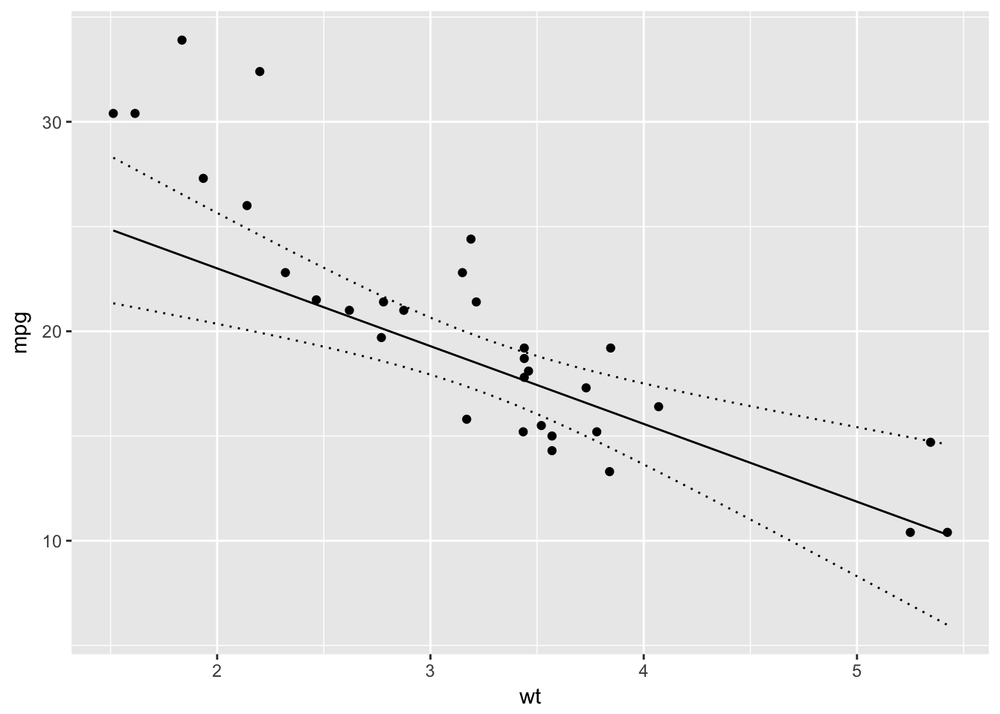
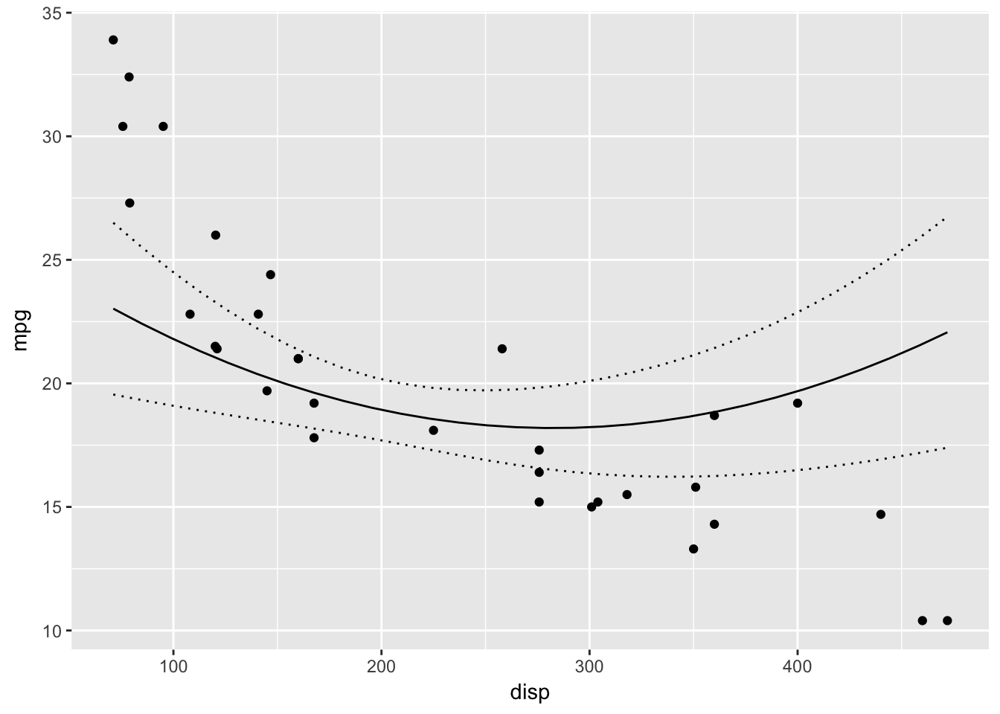

Introduction
newdata is an R package to generate new data frames for passing to predict functions. In the new data the column or columns of interest vary across their range while the remaining columns are held constant at their reference value.
The reference value for a factor is its first level, while the reference level for columns of other types are the mean or rounded mean in the case of logicals, integers, Dates or POSIXcts.
Demonstration
library(ggplot2)
library(newdata)
mtcars <- datasets::mtcars
model <- lm(mpg ~ wt + hp + poly(disp,2), data = mtcars)
summary(model)
#>
#> Call:
#> lm(formula = mpg ~ wt + hp + poly(disp, 2), data = mtcars)
#>
#> Residuals:
#> Min 1Q Median 3Q Max
#> -3.3887 -1.6079 -0.3997 1.7992 4.2331
#>
#> Coefficients:
#> Estimate Std. Error t value Pr(>|t|)
#> (Intercept) 35.13941 3.53184 9.949 1.58e-10 ***
#> wt -3.71314 0.91483 -4.059 0.000379 ***
#> hp -0.02115 0.01026 -2.062 0.048978 *
#> poly(disp, 2)1 -4.09195 6.21246 -0.659 0.515687
#> poly(disp, 2)2 7.87570 2.36778 3.326 0.002546 **
#> ---
#> Signif. codes: 0 '***' 0.001 '**' 0.01 '*' 0.05 '.' 0.1 ' ' 1
#>
#> Residual standard error: 2.263 on 27 degrees of freedom
#> Multiple R-squared: 0.8772, Adjusted R-squared: 0.859
#> F-statistic: 48.2 on 4 and 27 DF, p-value: 6.521e-12
# generate a data frame across range of wt with other predictor
# variables held constant
wt <- new_data(mtcars, "wt")
head(wt)
#> # A tibble: 6 x 11
#> mpg cyl disp hp drat wt qsec vs
#> <dbl> <dbl> <dbl> <dbl> <dbl> <dbl> <dbl> <dbl>
#> 1 20.09062 6.1875 230.7219 146.6875 3.596563 1.513000 17.84875 0.4375
#> 2 20.09062 6.1875 230.7219 146.6875 3.596563 1.647862 17.84875 0.4375
#> 3 20.09062 6.1875 230.7219 146.6875 3.596563 1.782724 17.84875 0.4375
#> 4 20.09062 6.1875 230.7219 146.6875 3.596563 1.917586 17.84875 0.4375
#> 5 20.09062 6.1875 230.7219 146.6875 3.596563 2.052448 17.84875 0.4375
#> 6 20.09062 6.1875 230.7219 146.6875 3.596563 2.187310 17.84875 0.4375
#> # ... with 3 more variables: am <dbl>, gear <dbl>, carb <dbl>
wt <- cbind(wt, predict(model, newdata = wt, interval = "confidence"))
ggplot(data = wt, aes(x = wt, y = fit)) +
geom_point(data = mtcars, aes(y = mpg)) +
geom_line() +
geom_line(aes(y = lwr), linetype = "dotted") +
geom_line(aes(y = upr), linetype = "dotted") +
ylab("mpg")
# generate a data frame across range of disp with other predictor
# variables held constant
disp <- new_data(mtcars, "disp")
head(disp)
#> # A tibble: 6 x 11
#> mpg cyl disp hp drat wt qsec vs
#> <dbl> <dbl> <dbl> <dbl> <dbl> <dbl> <dbl> <dbl>
#> 1 20.09062 6.1875 71.10000 146.6875 3.596563 3.21725 17.84875 0.4375
#> 2 20.09062 6.1875 84.92414 146.6875 3.596563 3.21725 17.84875 0.4375
#> 3 20.09062 6.1875 98.74828 146.6875 3.596563 3.21725 17.84875 0.4375
#> 4 20.09062 6.1875 112.57241 146.6875 3.596563 3.21725 17.84875 0.4375
#> 5 20.09062 6.1875 126.39655 146.6875 3.596563 3.21725 17.84875 0.4375
#> 6 20.09062 6.1875 140.22069 146.6875 3.596563 3.21725 17.84875 0.4375
#> # ... with 3 more variables: am <dbl>, gear <dbl>, carb <dbl>
disp <- cbind(disp, predict(model, newdata = disp, interval = "confidence"))
ggplot(data = disp, aes(x = disp, y = fit)) +
geom_point(data = mtcars, aes(y = mpg)) +
geom_line() +
geom_line(aes(y = lwr), linetype = "dotted") +
geom_line(aes(y = upr), linetype = "dotted") +
ylab("mpg")
Installation
To install the latest version from GitHub
# install.packages("devtools")
devtools::install_github("poissonconsulting/newdata")Contribution
Please report any issues.
Pull requests are always welcome.
Please note that this project is released with a Contributor Code of Conduct. By participating in this project you agree to abide by its terms.